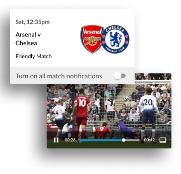
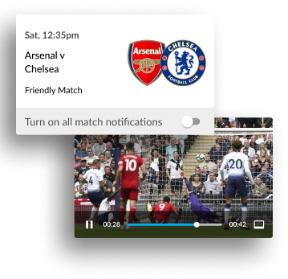

Sat, 12:35 pm
Arsenal
v Chelsea
Friendly Match
Turn on all match notifications
 

WHAT IT DOES
An Enhanced Football Experience
The Guardian Live Scores app is your go to app for live scores and watching Premier League goals… Get in there, what a result!
As well as videos of all the goals, you can watch match highlights, check out the latest scores and results and stay bang-up-to-date with the big football stories from The Guardian publication.
Learn more
Sarah Udoma
I use this app every day and it's a great way to keep up to date with what's going on in football.
Noah Jackson
I use this app every day and it's a great way to keep up to date with what's going on in football. It's a shame it won't rotate into landscape mode like its main competitor
Darren Wilson
Good for scores and commentary but the team lineups have stopped working.
Michael Akinuli
Good for watching the goals and great for highlights instead of waiting till 10:30 before you can watch highlights on March of the day also no need of sky go
Sarah Udoma
I use this app every day and it's a great way to keep up to date with what's going on in football.